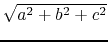

On the planet Pandora, huge rocks are floating in the sky. Despite the beautiful scenery, these rocks bring some critical problem: they block the sunshine, and shade on the ground. Na'vi (``people" living on the planet) cannot grow plants in the shade because of the lack of sunshine. In order to predicate the amount of food they can get, they have to calculate the area of the shade.
Let's assume the ``sun" as a point-source of light, and the ground as a infinite flat plane. Also, to simplify this problem, assume all rocks are convex polyhedrons.
Now here is a mathematical problem. Given the position of the point-source of light, the position of a convex polyhedron and the position of an infinite plane, you are required to calculate the area of the shade. Please note that light travels in a strictly straight line and the light source and the convex polyhedron are on the same side of the plane. The light source is not placed in the convex polyhedron, nor on the polyhedron or on the plane.
The input contains no more than 100 cases.
Each case contains several lines which are formatted as follows.
a b c d
n
x1 y1 z1
x2 y2 z2
......
xn yn zn
x0 y0 z0
a, b, c and d means that the plane is ax + by + cz = d. n means the number of vertex of the convex polyhedron. It is guaranteed that n is no more than 100. Following it are n lines. Each line contains three float numbers, indicating the position of a point which is a vertex of the polyhedron. The last line also contains three float numbers, which means the position of the point-source of light.
The input is ended by a = 0, b = 0, c = 0 and d = 0.
For each case, if there is no shade on the plane, print ``0.00".
If the area of the shade is infinite, print ``Infi".
Otherwise, print out the area of the shade. Please round the result to two digits after the decimal point.
Hint:
Here are some hints to help you implement rotation in 3-dimensional
space.
As we all know, the normal vector of the plane is (a, b, c) , so after we rotate the space, the normal vector will be the z-axis. So we can only consider how to rotate the vector to the position (0, 0,).
It is easy to implement the two steps. In first step, the third number in the normal vector does not change, so this is like rotation in a 2-dimensional space. Similarly, we implement the second step.
0 0 1 0 8 1 1 1 1 -1 1 -1 1 1 -1 -1 1 1 1 0 1 -1 0 -1 1 0 -1 -1 0 2 2 1 1 0 0 -2 8 1 1 1 1 1 -1 1 -1 1 1 -1 -1 -1 1 1 -1 1 -1 -1 -1 1 -1 -1 -1 2 0 0 1 1 1 1 0 0 0 0 0 0 0 0
Infi 64.00 0.00